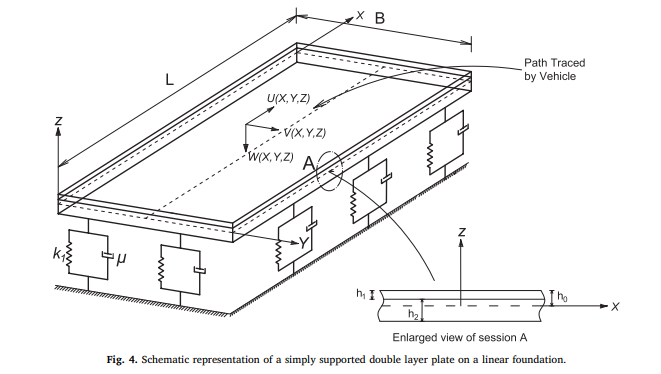

Iterative Decoupled Technique for Dynamic Response of Vehicle-Pavement Systems
This project focus on developing an iterative decoupled technique for the simulating the dynamic response of vehicle-pavement systems. The method involves the decoupling of the vehicle-pavement coupled system into two subsystems and solving them independently until the solution has converged using an iterative scheme. The technique uses a combination of the Galerkin method, finite difference method, and Newmark’s method for discretizing the differential equation and computing the dynamic response. The proposed method is illustrated for two pavement models. The first model idealizes the pavement as a Timoshenko beam resting on a nonlinear foundation. The second model considers the pavement as a double-layer rectangular thin plate on a two-parameter foundation. The vehicle is simplified as a spring-mass-damper oscillator. The effect of the two pavement models on the dynamic response is investigated. Random roughness profiles for two different quality of roads is considered, and Monte Carlo simulation is used to compute the stochastic system responses. Additionally, the effect of coupling action on pavement displacements and vehicle body vertical displacement are examined. Numerical study on the proposed technique reveals that the method has a linear rate of convergence. The competence of the technique in computing the dynamic response of a pavement traversed by multiple vehicles is demonstrated. Numerical investigations prove that the decoupled technique is not only computationally efficient but also has the potential to tackle complicated problems in vehicle-pavement system dynamics.

Schematic representation of a simply supported double layer plate on a linear foundation.
FOR MORE DETAILS CLICK HERE!